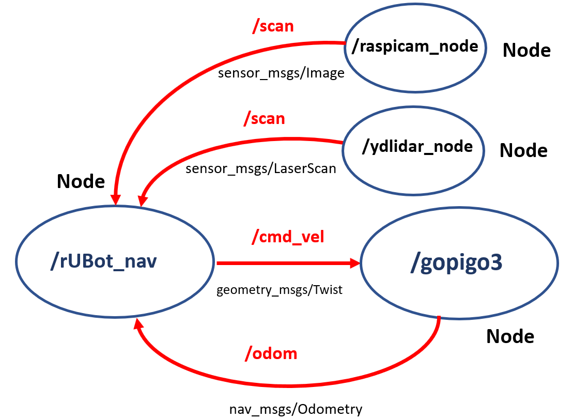

Control of gopigo3 in RaspberryPi¶
In a hospital, a delivery robot carries samples or food from one room to another.
The main objectives are:
- Assemble a real robot (gopigo3)
- Control the gopigo3 robot movement
- use SLAM (Simultaneous Localization and Mapping) techniques to generate and store a map of the room
- use Navigation ROS package to find an optimal trajectory to reach a speciffic target position
- Define a route to be followed by the gopigo3 robot using Navigation package
let's see how to fulfill these objectives
Gopigo3 robot prototype setup¶
This tobot prototype is based on:
- On-board computer based on raspberrypi3 board
- 2 DC-motor with encoder for differential drive controller
- RaspiCAM RGB camera
- LIDAR sensor

The raspberrypi3 onboard is preinstalled with:
- raspbian OS
- ROS source installation with rviz
- a "master_ws_original_copy" repository. You have NOT to use this repository. This could be used only in case you need to restart the repository with the original settings
- a "gopigo3_rbpi3_ws" repository. This will be used by the students to perform the project with gopigo3 robot. This folder will be placed in the raspberrypi3 Desktop.
This repository is located in /home/pi/Desktop folder and it is already compiled.
The raspberrypi3 is configured:
- to generate a hotspot
- VNC activated
- raspicam activated
When powering the raspberrypi3, generates a hotspot you have to connect to:
- SSID name: rubot_10
- password "CorrePiCorre"
Once you are connected to this network you will be able to connect your computer to the raspberrypi3 using VNC viewer:
- download and install the VNC viewer for windows at: https://www.realvnc.com/en/connect/download/viewer/
- Select the raspberrypi IP address: 192.168.4.1
- you have to specify:
- user: pi
- password: raspberry
- You will have the raspberrypi3 desktop on your windows VNC screen

If you not have the "gopigo3_rbpi3_ws" folder in your desktop, you can "transfer" folder from your PC (it takes 30s)
The first time you copy the folder, you need to compile the workspace:
- open a terminal in the ws
- type "catkin_make" (it takes 10min)
Carefull!: Some actions have to be done:
- review the ~/.bashrc: source to the ws and delete the environment variables
- make executable the c++ and python files
2. gopigo3 first control movements¶
First, let's control the gopigo3 movement to perform:
- movement control using keyboard
- movement control with specific python script
- autonomous navigation
- autonomous navigation following right or left wall
- Navigation to speciffic POSE
We have created a specific package "gopigo_control" where all these controls are programed. You can review from the "gopigo3_rbpi3_ws" workspace the src/obstacle_avoidance folder where threse are 2 new folders:
- scrip folder: with the python programs for specific movement control
- launch folder: with programs to launch the movement control

To properly perform a especific movement control we have first to:
- launch the gopigo3 node: able to control de 2 motors and measure the odometry
- launch the raspicam node
- launch the LIDAR sensor node
- launch the rUBot_nav node to perform the specific movement control

We will create specific python files and launch files for each movement control
1. Keyboard movement control¶
To control the gopigo robot with keyboard, we need to install "teleop_tools" package. This is already installed in our master_ws as you can see in the previous figure.
You will only need to:
- launch the gopigo3 node
- launch the key_teleop node
Open 1 terminal and type:
- roslaunch gopigo3_node gopigo3.launch
Then open a new terminal and type:
- rosrun key_teleop key_teleop.py /key_vel:=/cmd_vel
Carefull: if there are problems, make a source in each terminal

Open a new terminal and see all the nodes and topics involved:
- type rqt_graph
Pres q and crtl+C to close the terminals
2. Movement control with specific python script¶
You want to perform the movement control in "move3_gopigo_distance.py" simulation ws.
You will only need to:
- copy this python file to the script folder
- create a new "move_gopigo3.launch" file to launch gopigo3 and the control node
Carefull!: be sure the new python file is executable
Type:
roslaunch gopigo_control move_gopigo3.launch
<launch>
<node name="gopigo3" pkg="gopigo3_node" type="gopigo3_driver.py" output="screen" />
<!-- run gopigo -->
<arg name="v" default="0.1"/>
<arg name="w" default="0"/>
<arg name="d" default="0.3"/>
<node pkg="gopigo_control" type="move_gopigo3.py" name="rubot_nav" output="screen" >
<param name="v" value="$(arg v)"/>
<param name="w" value="$(arg w)"/>
<param name="d" value="$(arg d)"/>
</node>
</launch>
3. Autonomous navigation¶
For autonomous navigation you need the LIDAR sensor.
First test your LIDAR angles with the program: rubot_lidar_test.py
We will have to launch the following nodes:
- the gopigo3 node for driving control
- the ydlidar node (or rplidar)
- the raspicam node
- the lidar_test node
To launch these nodes we need one terminal for each node. We will execute in different terminals:
type the following commands to each terminal:
roslaunch gopigo3_node gopigo3.launch
roslaunch ydlidar lidar.launch (or roslaunch rplidar_ros rplidar.launch)
roslaunch raspicam_node camerav2_1280x960_10fps.launch enable_raw:=true camera_frame_id:="laser_frame"
rosrun gopigo_control rubot_lidar_test.py
You need to verify that the forward direction corresponds to the zero angle. Is it true???
Now you can perform the autonomous navigation defined in "rubot_self_nav.py"
Carefull!: be sure the new python file is executable
We will have to launch the following nodes:
- the gopigo3 node for driving control
- the ydlidar node (or rplidar)
- the raspicam node
- the rubot_nav node for autonomous navigation
roslaunch gopigo3_node gopigo3.launch
roslaunch ydlidar lidar.launch (or roslaunch rplidar_ros rplidar.launch)
roslaunch raspicam_node camerav2_1280x960_10fps.launch enable_raw:=true camera_frame_id:="laser_frame"
rosrun gopigo_control rubot_self_nav.py
You will see that there are some problems in the LIDAR orientation and in the parameters on rubot_self_nav.py
You can create a compact "rubotYD_self_nav.launch" file for gopigo3 robots using YDLidar:
- roslaunch gopigo_control rubotYD_self_nav.launch
<launch>
<!-- launch gopigo3 -->
<include file="$(find gopigo3_node)/launch/gopigo3.launch"/>
<!-- launch ydlidar -->
<include file="$(find ydlidar)/launch/lidar.launch"/>
<!-- launch raspicam -->
<include file="$(find raspicam_node)/launch/camerav2_1280x960_10fps.launch">
<arg name="enable_raw" value="true"/>
<arg name="camera_frame_id" value="base_scan"/>
</include>
<!-- launch obstacle avoidance -->
<arg name="LIDAR" default="YD" />
<arg name="distance_laser" default="0.3" />
<arg name="speed_factor" default="0.1"/>
<arg name="forward_speed" default="3.8" />
<arg name="backward_speed" default="-1.5" />
<arg name="rotation_speed" default="20" />
<node name="rubot_nav" pkg="gopigo_control" type="rubot_self_nav.py" output="screen" >
<param name="LIDAR" value="$(arg LIDAR)"/>
<param name="distance_laser" value="$(arg distance_laser)"/>
<param name="speed_factor" value="$(arg speed_factor)"/>
<param name="forward_speed" value="$(arg forward_speed)"/>
<param name="backward_speed" value="$(arg backward_speed)"/>
<param name="rotation_speed" value="$(arg rotation_speed)"/>
</node>
<!-- Show in Rviz -->
<!--<node name="rviz" pkg="rviz" type="rviz" args="-d $(find gopigo_control)/rviz/laserscan.rviz"/>-->
</launch>
You can create a compact "rubotRP_self_nav.launch" file for gopigo3 robots using RPLidar:
<launch>
<!-- launch gopigo3 -->
<include file="$(find gopigo3_node)/launch/gopigo3.launch"/>
<!-- launch rplidar -->
<include file="$(find rplidar_ros)/launch/rplidar.launch"/>
<!-- launch raspicam -->
<include file="$(find raspicam_node)/launch/camerav2_1280x960_10fps.launch">
<arg name="enable_raw" value="true"/>
<arg name="camera_frame_id" value="base_scan"/>
</include>
<!-- launch obstacle avoidance -->
<arg name="LIDAR" default="RP" />
<arg name="distance_laser" default="0.3" />
<arg name="speed_factor" default="0.0"/>
<arg name="forward_speed" default="2" />
<arg name="backward_speed" default="-1" />
<arg name="rotation_speed" default="10" />
<node name="rubot_nav" pkg="gopigo_control" type="rubot_self_nav.py" output="screen" >
<param name="LIDAR" value="$(arg LIDAR)"/>
<param name="distance_laser" value="$(arg distance_laser)"/>
<param name="speed_factor" value="$(arg speed_factor)"/>
<param name="forward_speed" value="$(arg forward_speed)"/>
<param name="backward_speed" value="$(arg backward_speed)"/>
<param name="rotation_speed" value="$(arg rotation_speed)"/>
</node>
<!-- Show in Rviz -->
<!--<node name="rviz" pkg="rviz" type="rviz" args="-d $(find gopigo_control)/rviz/laserscan.rviz"/>-->
</launch>
Careful!:
- delete the rviz arguments if you have not saved the configuration file laserscan.rviz: args="-d $(find obstacle_avoidance)/rviz/laserscan.rviz"
In order to see the rubot with the topics information we will use rviz.
In rviz, select the fixed frame to "base_scan", and add Camera and LaserScan with the corresponding topics names.
You can then save the config file as laserscan.rviz name and use it in the launch file

A launch file is created to integrate all the needed roslaunch parameters but you can change the defauld values with this syntax:
roslaunch gopigo_control rubotYD_self_nav.launch distance_laser:=0.2 speed_factor:=1.3
4. Wall Follower¶
There are 2 main tasks:
- Create a python file "follow_wall_right.py" to perform the wall follower in the maze of our gopigo3 robot
- Create a launch file to initialyse all the needed nodes in our system for autonomous navigation
We have developed 2 different methods for wall follower:
- Geometrical method
- Lidar ranges method
a) Geometrical method¶
In src folder you create the python files for wall follower purposes
The instructions to perform the python program are in the notebook: https://github.com/Albert-Alvarez/ros-gopigo3/blob/lab-sessions/develop/ROS%20con%20GoPiGo3%20-%20S4.md

Create a launch folder for the launch files
roslaunch gopigo_control wall_follower_gm.launch
<launch>
<!-- launch gopigo3 -->
<include file="$(find gopigo3_node)/launch/gopigo3.launch"/>
<!-- launch ydlidar -->
<include file="$(find ydlidar)/launch/lidar.launch"/>
<!-- LIDAR zero angle correction 180º -->
<node pkg="tf" type="static_transform_publisher" name="base_link_to_base_scan"
args="-0.03 0.01 0.15 3.1416 0.0 0.0 /base_link /base_scan 40" />
<!-- launch raspicam -->
<include file="$(find raspicam_node)/launch/camerav2_1280x960_10fps.launch">
<arg name="enable_raw" value="true"/>
<arg name="camera_frame_id" value="base_scan"/>
</include>
<!-- launch follow wall -->
<arg name="kp" default="0.5" />
<arg name="distance_reference" default="0.3" />
<arg name="lookahead_distance" default="0.3" />
<arg name="forward_speed" default="0.1" />
<arg name="theta" default="40.0" />
<node name="wall_follower_controller" pkg="gopigo_control" type="wall_follower_node.py" output="screen" >
<param name="kp" value="$(arg kp)"/>
<param name="distance_reference" value="$(arg distance_reference)"/>
<param name="lookahead_distance" value="$(arg lookahead_distance)"/>
<param name="forward_speed" value="$(arg forward_speed)"/>
<param name="theta" value="$(arg theta)"/>
</node>
<!-- Show in Rviz -->
<node name="rviz" pkg="rviz" type="rviz" args="-d $(find obstacle_avoidance)/rviz/laserscan.rviz"/>
</launch>
b) ranges method¶
In src folder you create the python file for wall follower purposes
<!-- Show in Rviz -->
<node name="rviz" pkg="rviz" type="rviz" args="-d $(find rubot_control)/rviz/rubot_nav.rviz"/>
<!-- Navigation Program -->
<arg name="distance_laser" default="0.3" />
<arg name="speed_factor" default="0.1" />
<arg name="forward_speed" default="2" />
<arg name="backward_speed" default="-2" />
<arg name="rotation_speed" default="10" />
<node name="wall_follower" pkg="rubot_control" type="follow_wall_right2.py" output="screen" >
</node>
5. Go to POSE¶
The objective is to program the robot to reach a speciffic target POSE defining:
- x position
- y position
- angle orientation
We can take the same python script you have programed for simulated Gazebo environment
Type:
- roslaunch gopigo_control rubotYD_go2pose.launch